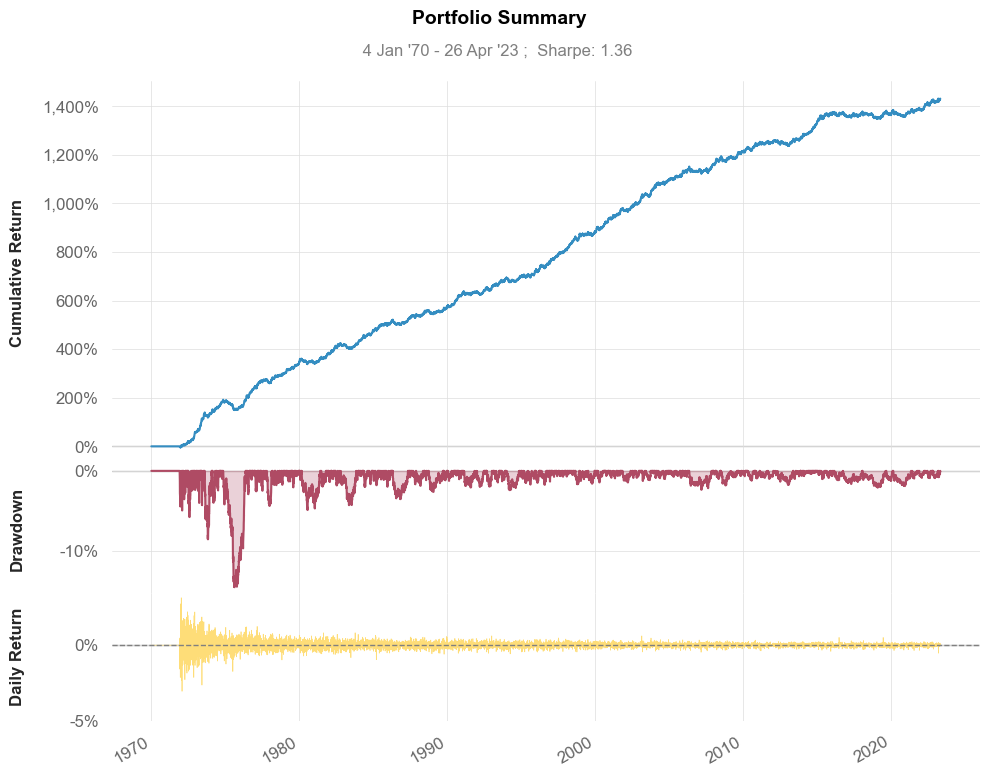

CTA 5.0 - Optimization 2.0#
import warnings
warnings.simplefilter(action='ignore', category=FutureWarning)
import time
import pandas as pd
import numpy as np
from cvx.simulator import FuturesBuilder
from cvx.simulator import interpolate
from tinycta.linalg import *
from tinycta.signal import *
# Load prices
prices = pd.read_csv("data/Prices_hashed.csv", index_col=0, parse_dates=True)
# interpolate the prices
prices = prices.apply(interpolate)
from ipywidgets import Label, HBox, VBox, IntSlider, FloatSlider
fast = IntSlider(min=4, max=192, step=4, value=32)
slow = IntSlider(min=4, max=192, step=4, value=96)
vola = IntSlider(min=4, max=192, step=4, value=32)
winsor = FloatSlider(min=1.0, max=6.0, step=0.1, value=4.2)
corr = IntSlider(min=50, max=500, step=10, value=200)
shrinkage = FloatSlider(min=0.0, max=1.0, step=0.05, value=0.5)
left_box = VBox([Label("Fast Moving Average"),
Label("Slow Moving Average"),
Label("Volatility"),
Label("Winsorizing"),
Label("Correlation"),
Label("Shrinkage")])
right_box = VBox([fast, slow, vola, winsor, corr, shrinkage])
HBox([left_box, right_box])
T = time.time()
correlation = corr.value
returns_adj = prices.apply(returns_adjust, com=vola.value, clip=winsor.value)
# DCC by Engle
cor = returns_adj.ewm(com=correlation, min_periods=correlation).corr()
mu = np.tanh(returns_adj.cumsum().apply(osc)).values
vo = prices.pct_change().ewm(com=vola.value, min_periods=vola.value).std().values
builder = FuturesBuilder(prices=prices, aum=1e8)
for n, (t, state) in enumerate(builder):
mask = state.mask
matrix = shrink2id(cor.loc[t[-1]].values, lamb=shrinkage.value)[mask, :][:, mask]
expected_mu = np.nan_to_num(mu[n][mask])
expected_vo = np.nan_to_num(vo[n][mask])
risk_position = solve(matrix, expected_mu) / inv_a_norm(expected_mu, matrix)
builder.cashposition = 1e6*risk_position / expected_vo
portfolio = builder.build()
print(time.time()-T)
/home/runner/work/cs/cs/.venv/lib/python3.10/site-packages/pandas/core/arraylike.py:399: RuntimeWarning: invalid value encountered in log
result = getattr(ufunc, method)(*inputs, **kwargs)
---------------------------------------------------------------------------
AttributeError Traceback (most recent call last)
Cell In[4], line 12
9 mu = np.tanh(returns_adj.cumsum().apply(osc)).values
10 vo = prices.pct_change().ewm(com=vola.value, min_periods=vola.value).std().values
---> 12 builder = FuturesBuilder(prices=prices, aum=1e8)
14 for n, (t, state) in enumerate(builder):
15 mask = state.mask
File <string>:7, in __init__(self, prices, _state, _units, aum)
File ~/work/cs/cs/.venv/lib/python3.10/site-packages/cvx/simulator/futures/builder.py:48, in FuturesBuilder.__post_init__(self)
34 def __post_init__(self) -> None:
35 """
36 The __post_init__ method is a special method of initialized instances
37 of the _Builder class and is called after initialization.
(...)
45 is called automatically after the object initialization.
46 """
---> 48 super().__post_init__()
49 self._state = FuturesState()
File ~/work/cs/cs/.venv/lib/python3.10/site-packages/cvx/simulator/_abc/builder.py:54, in Builder.__post_init__(self)
48 assert self.prices.index.is_monotonic_increasing
49 assert self.prices.index.is_unique
51 self._units = pd.DataFrame(
52 index=self.prices.index,
53 columns=self.prices.columns,
---> 54 data=np.NaN,
55 dtype=float,
56 )
File ~/work/cs/cs/.venv/lib/python3.10/site-packages/numpy/__init__.py:400, in __getattr__(attr)
397 raise AttributeError(__former_attrs__[attr], name=None)
399 if attr in __expired_attributes__:
--> 400 raise AttributeError(
401 f"`np.{attr}` was removed in the NumPy 2.0 release. "
402 f"{__expired_attributes__[attr]}",
403 name=None
404 )
406 if attr == "chararray":
407 warnings.warn(
408 "`np.chararray` is deprecated and will be removed from "
409 "the main namespace in the future. Use an array with a string "
410 "or bytes dtype instead.", DeprecationWarning, stacklevel=2)
AttributeError: `np.NaN` was removed in the NumPy 2.0 release. Use `np.nan` instead.
Conclusions#
Dramatic relativ improvements observable despite using the same signals as in previous Experiment.
Main difference here is to take advantage of cross-correlations in the risk measurement.
Possible to add constraints on individual assets or groups of them.
Possible to reflect trading costs in objective with regularization terms (Ridge, Lars, Elastic Nets, …)
portfolio.snapshot()

pd.set_option('display.precision', 2)
portfolio.metrics()
Strategy
------------------ ----------
Start Period 1970-01-05
End Period 2023-04-26
Risk-Free Rate 0.0%
Time in Market 95.0%
Cumulative Return 0.0%
CAGR﹪ 0.0%
Sharpe 1.41
Prob. Sharpe Ratio 100.0%
Sortino 2.09
Sortino/√2 1.48
Omega 1.27
Max Drawdown -0.0%
Longest DD Days 584
Gain/Pain Ratio 0.27
Gain/Pain (1M) 1.79
Payoff Ratio 1.03
Profit Factor 1.27
Common Sense Ratio 1.37
CPC Index 0.72
Tail Ratio 1.08
Outlier Win Ratio 3.36
Outlier Loss Ratio 3.27
MTD 0.0%
3M 0.0%
6M 0.0%
YTD 0.0%
1Y 0.0%
3Y (ann.) 0.0%
5Y (ann.) 0.0%
10Y (ann.) 0.0%
All-time (ann.) 0.0%
Avg. Drawdown -0.0%
Avg. Drawdown Days 25
Recovery Factor 33.57
Ulcer Index 0.0
Serenity Index 9.47